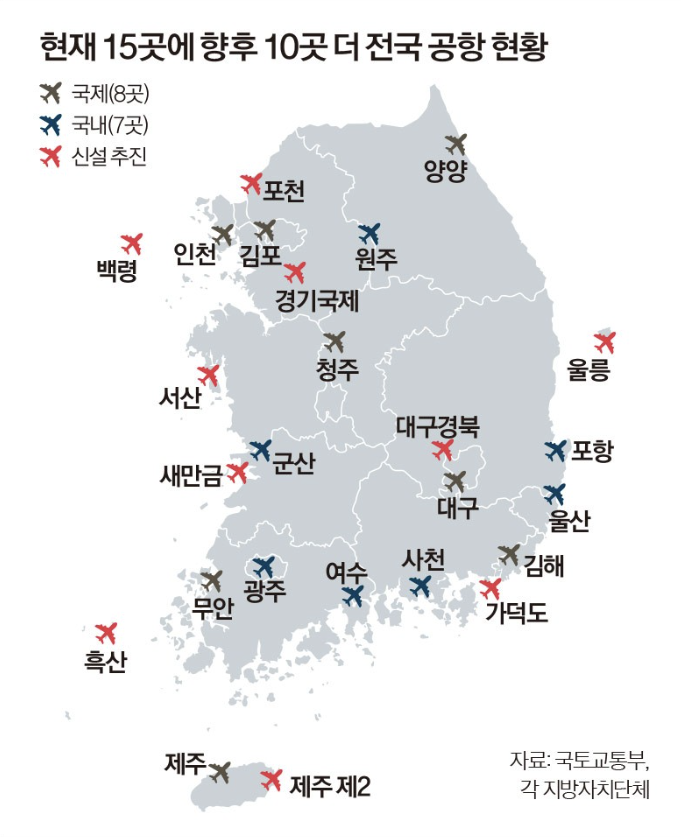
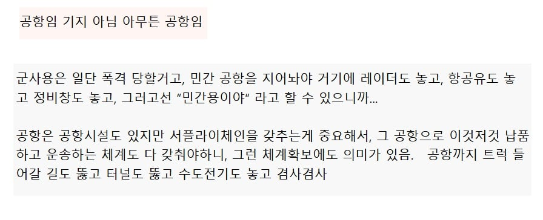

69 · 8 · 3 시간 전 · 원문


수집 당시 댓글 8개
삼다수바 · 2 시간 전
백령도 놀러가고 싶었는데 마침 공항 지어주네
오이쉬 · 2 시간 전
그래 잘하자
성아즈리엘 · 1 시간 전
서산은 군공항 쓰는거임 활주로 존나 큼
↳ 답글 · GB · 1 시간 전
서산이나 이런 군공항 있는김에 짓는곳들은 유럽에서 라이언 애들이 들수시고 다니는 공항들처럼 지으면 솔직히 크게 돈 안들거 같긴 함
↳ 답글 · 물질전달 · 30 분 전
20전비 좋지
↳ 답글 · 시스트라 · 15 분 전
대구경북도 하는김에 11비 옮기려는거던데
마리괭이 · 1 시간 전
광주랑 대구는 공항 신설되면 폐쇄 아니냐
새만금은 며칠 전 법원 판결로 나가리된 상태고
레벨한우도살자 · 1 시간 전
경기국제는 어디다 짓겠단거지
백령도 놀러가고 싶었는데 마침 공항 지어주네